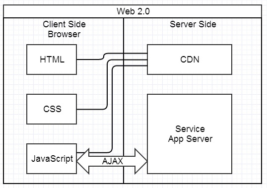

前端架构设计
日程
- 前后端分离
- Web研发模式
- 前端架构设计
前后端分离
Web研发模式
JSP时代
JSP时代
后端MVC时代
Ajax时代
SPA时代
前端MVC时代
NodeJS时代
全栈工程师
前端架构设计
整体思路
- Ajax前后端分离
- 模块化代码组织
- 前端优秀实践
- 自动化构建
Ajax前后端分离
模块化代码组织
- Site
- Module
- Page
- Component
目录结构
Component静态集成
前端优秀实践
- LiveReload
- JS连接压缩
- CSS连接压缩
- Image无损压缩
- Sprites生成
- CDN路径转换
- 版本号(Hash)生成
前端优秀实践
- SASS预编译
- 静态代码检查
- 单元测试
- 文档生成
自动化构建
将前述优秀实践全部自动化！
持续集成